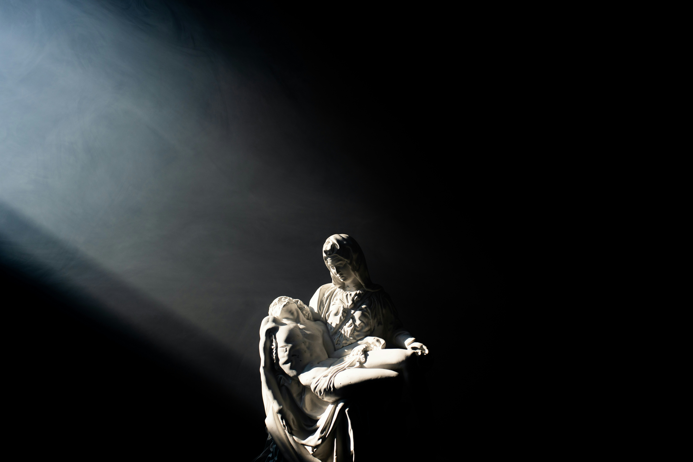
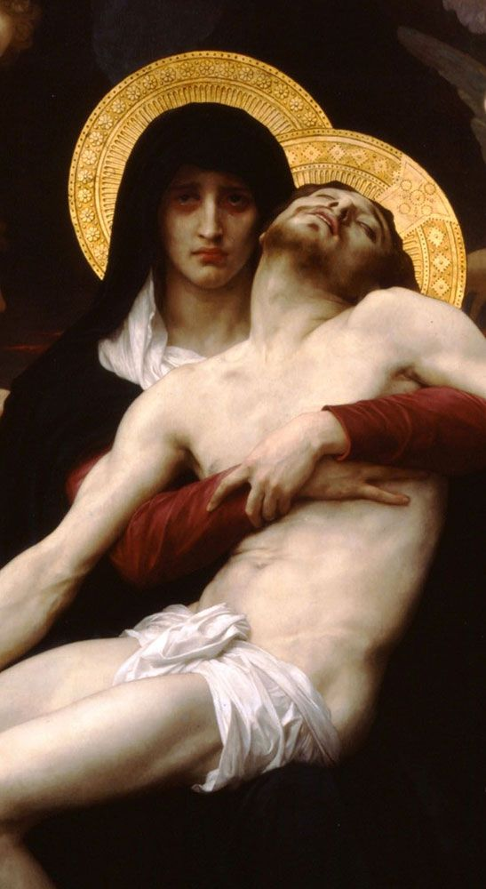
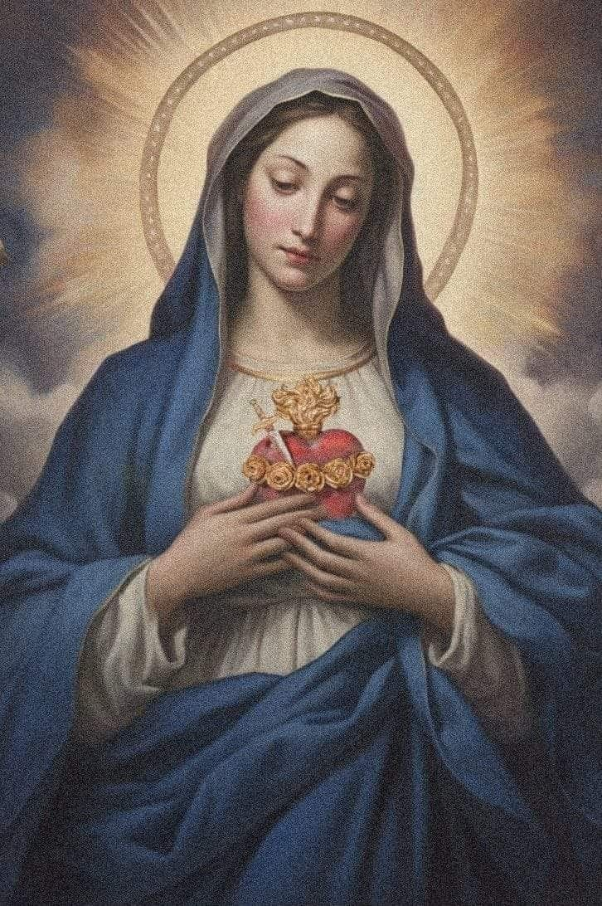
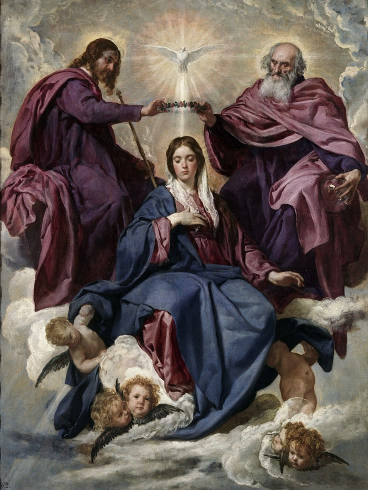

A Vida de Maria, Mãe de Jesus

Maria de Nazaré, conhecida como a Virgem Maria ou Santa Maria, é uma das figuras mais reverenciadas do Cristianismo. Como mãe de Jesus Cristo, ela ocupa um lugar único na história da salvação e na devoção cristã.
Origens e Juventude
Maria nasceu em Nazaré, na Galileia, por volta do ano 20 a.C. Segundo a tradição, seus pais eram Joaquim e Ana, um casal piedoso que a educou na fé judaica. Aos 14 anos, Maria estava noiva de José, um carpinteiro da linhagem do rei Davi, quando recebeu a visita do anjo Gabriel.
Família
Maria e José tiveram Jesus como primogênito. Os Evangelhos mencionam que Maria teve outros filhos (Marcos 6:3), mas a tradição católica entende que eram parentes próximos ou filhos de José de um casamento anterior.
Ministério de Jesus
Maria acompanhou Jesus durante seu ministério público, estando presente em momentos importantes como as bodas de Caná (João 2:1-12) e ao pé da cruz (João 19:25-27). Jesus, ao vê-la com o discípulo amado, disse: "Mulher, eis aí teu filho", e ao discípulo: "Eis aí tua mãe".
Últimos Anos
Após a ascensão de Jesus, Maria permaneceu com os apóstolos em Jerusalém, participando da comunidade cristã primitiva (Atos 1:14). Segundo a tradição, ela viveu seus últimos anos em Éfeso, na companhia de João, o apóstolo.
"Desde agora todas as gerações me chamarão bem-aventurada, porque o Poderoso fez grandes coisas em meu favor." (Lucas 1:48-49)
A Anunciação do Anjo Gabriel

O Evento que Mudou a História
A Anunciação é um dos momentos mais importantes da história cristã, quando o anjo Gabriel anunciou a Maria que ela seria a mãe do Messias.
O Diálogo com o Anjo
Segundo Lucas 1:26-38, o anjo saudou Maria dizendo: "Ave, cheia de graça, o Senhor é contigo". Maria ficou perturbada com esta saudação, mas o anjo a tranquilizou:
"Não temas, Maria, pois encontraste graça diante de Deus. Eis que conceberás e darás à luz um filho, e lhe porás o nome de Jesus. Ele será grande e será chamado Filho do Altíssimo."
A Resposta de Maria
Maria perguntou como seria possível, já que não conhecia homem. O anjo explicou que seria por obra do Espírito Santo, e que sua parenta Isabel, embora idosa, também concebera um filho (João Batista).
A resposta de Maria é um modelo de fé e entrega:
"Eis aqui a serva do Senhor. Faça-se em mim segundo a tua palavra." (Lucas 1:38)
Significado Teológico
A Anunciação representa:
- O momento da Encarnação do Verbo
- O "sim" de Maria que possibilitou a redenção
- O modelo de resposta humana à vontade divina
O Papel de Maria na Redenção

Nova Eva
Os Padres da Igreja viram em Maria a "Nova Eva". Enquanto Eva desobedeceu levando o pecado ao mundo, Maria obedeceu, tornando-se instrumento da salvação.
Co-Redentora?
Embora apenas Jesus seja o Redentor, Maria participou de forma única no plano salvífico:
- Seu "sim" possibilitou a Encarnação
- Sofreu com Jesus na cruz (Lumen Gentium 58)
- Intercede continuamente pela humanidade
Medianeira de Todas as Graças
A tradição católica vê Maria como canal de todas as graças, pois trouxe ao mundo a fonte da graça - Jesus Cristo.
"Todas as gerações me chamarão bem-aventurada, porque o Poderoso fez grandes coisas em meu favor." (Lucas 1:48-49)
Aparições Marianas

Maria teria aparecido em diversos lugares ao longo da história, trazendo mensagens de conversão, oração e paz. Algumas das aparições mais conhecidas:
Nossa Senhora de Guadalupe
México, 1531 - Deixou sua imagem gravada no manto de Juan Diego
Nossa Senhora de Lourdes
França, 1858 - Apareceu a Bernadette Soubirous, identificando-se como "Imaculada Conceição"
Nossa Senhora de Fátima
Portugal, 1917 - Apareceu a três pastorinhos, com mensagens sobre conversão e paz
Nossa Senhora Aparecida
Brasil, 1717 - Padroeira do Brasil, encontrada por pescadores no rio Paraíba
Os Dogmas Marianos

Verdades de Fé sobre Maria
A Igreja Católica definiu quatro dogmas sobre Maria, verdades fundamentais da fé cristã:
1. Maternidade Divina (Theotókos)
Definido no Concílio de Éfeso (431): Maria é verdadeiramente Mãe de Deus, pois Jesus é verdadeiro Deus e verdadeiro homem.
2. Virgindade Perpétua
Maria foi virgem antes, durante e depois do parto, permanecendo sempre consagrada a Deus.
3. Imaculada Conceição
Definido por Pio IX em 1854: Maria foi preservada do pecado original desde sua concepção, por méritos de Cristo.
4. Assunção
Definido por Pio XII em 1950: Maria foi elevada ao céu em corpo e alma ao final de sua vida terrena.
A Devoção a Maria

Formas de Devoção
A piedade mariana se expressa de diversas formas na vida da Igreja:
Orações Marianas
- Ave Maria
- Rosário
- Magnificat
- Salve Rainha
Festa Litúrgicas
- Imaculada Conceição (8/12)
- Nossa Senhora Aparecida (12/10)
- Assunção (15/8)
- Natividade de Maria (8/9)
Santuários Marianos
Locais de peregrinação dedicados a Maria:
- Aparecida (Brasil)
- Lourdes (França)
- Fátima (Portugal)
- Guadalupe (México)
"A Maria nada é impossível, pois Ela obteve do seu Filho tudo o que pede." (Santo Afonso de Ligório)